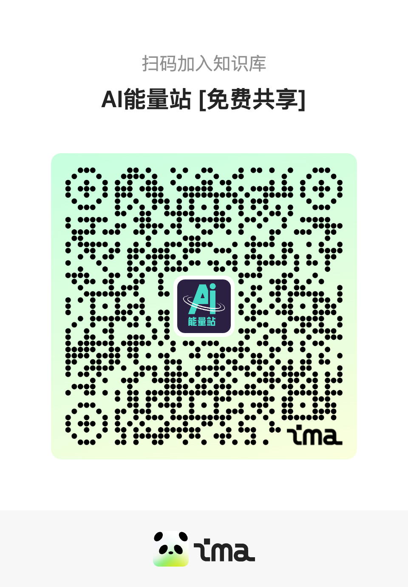

文｜博阳
编辑｜可君
GPT-5发布之后，虽然其性能并未能达成业界的“飞跃”期望，但其中最亮眼的就是幻觉率的大幅下降。
OpenAI给出的数据显示，GPT-5出现事实错误的概率比 GPT-4o 低约 45%，比 OpenAI o3 低约 80%。

但这一提升背后的原因却一直没有对外公开。在System Card里，OpenAI将此归功于强化学习训练，他们似乎利用了一些最新的训练方法，让这些模型学会了“完善自己的思考过程，尝试不同的策略，并认识到自己的错误”，然而，具体的方法却一直成谜。
9月4日，OpenAI 久违的发布了一篇论文《语言模型为何会产生幻觉》（Why Language Models Hallucinate）。
虽然OpenAI未完全公开所有技术细节，但结合这篇官方论文和已发布的技术文档，我们可以窥见其核心思路。

01
幻觉产生，在预训练阶段是不可避免的
幻觉是不可避免的，这个结论并不新鲜。但过往的研究基本上很少从语言模型本身的机制出发探讨，更多是围绕着训练数据的问题。
OpenAI的新论文一开始就证明了：“幻觉”是一种在LLM统计学习本质下必然会产生的、可预测的副产品。
OpenAI的论证逻辑很简单：生成可靠信息比判断是否可靠更难，而判断是否可靠本身必然会有失败的地方。
首先，论文利用语言模型自回归预测的本质，定义了其内在的“判断力”。
模型在评估一个句子时，会通过逐词预测的方式，将每一步的条件概率连乘，得出一个总概率值。这个概率值反映了该句子与模型在海量数据中学到的统计规律的符合程度。基于此，研究人员提出了一个理论上的“是否有效”（Is-It-Valid, IIV）判断器：当一个句子的内部概率高于某个设定的阈值时，即被判断为“有效”，反之则为“无效”。
简单理解就是，模型生成的话“看起来熟、顺”就“有效”，反之则无效。
然而，这个理论上的“判断器”并非永远可靠。在处理那些“面生，但又似乎哪里见过”的灰色信息时，它必然会出错。论文列举了多种导致判断失效的场景，包括：因数据稀疏（如“孤例”事实）导致模型只能猜测 ；模型本身能力不足以理解复杂概念 ；以及计算复杂、数据分布偏移和训练数据本身包含错误（垃圾进，垃圾出）等情况。

对于这种不可避免的“判断错误”会带来多大的后果，论文给出了一个严格的数学结论：（生成模型的错误率）≥ 2 ×（IIV 判断器的错误率）。
这个放大效应的根源在于，判断层面上的错误，必然会导致两种以上的幻觉。比如说1+1，模型给判断成等于3了。这会衍生出至少两种幻觉，一个是1+1=3，这是幻觉；另一种是1+1不等于2，这又是幻觉。他们都来自于同一个错误的判断。
因此，结论是清晰的：只要训练数据中不可避免地存在长尾、稀疏和充满噪声的部分，模型在判断层面就必然会失败。而模型在判断上犯的每一个错误，都会被放大并传导至生成任务中。因此生成中的幻觉也是不可避免的。
对于人类来讲，幻觉也基本是不可避免。我们也有很多拿不定到底是不是的事情，但人类有“知之为知之，不知为不知”的谚语。对于拿不定的东西，我们可以选择说不知道。
对于模型来讲，对齐的过程本应是教给它们“不知为不知”的一个过程。比如说提高其内部与IIV类似的“有效性判别器”的阈值，或者突出那些更可能的答案。
但OpenAI论文的后半部分正证明了后训练，在当下的评价体系下，没办法做好它们在这方面的工作。
02
后训练，未能有效地抑制幻觉
后训练并非是完全无效的。在论文中，OpenAI给出了一个校准的概念。
在预训练模型中，一个词的概率分布实际上是完全依照其训练材料产生的，这意味着它的自信程度基本反映了训练数据中的真实情况。在模型的预训练中，为了达到损失函数最小化的目标，模型就会自然而然地被校准。
但这也会产生出一种平原效应，即模型面对的很多选项的自信度都挺大的，都可以越过IIV判断器的阈值，因此很容易产生幻觉。
后训练过程的介入，通过明确的偏好反馈（例如，人类更喜欢答案A而不是B、C、D）来强行改变这片平坦的概率荒原。
这个过程导致了模型的“非校准”，让概率分布更集中，模型被教导要将绝大部分概率集中到那个被认为是“最佳”的答案上，形成一个陡峭的山峰。与此同时，其他曾经看似合理的选项（B、C、D等）的概率被极大地压制，远远低于IIV判断阈值。
通过这种方式，模型不再需要在多个弱选项之间进行猜测，因为它被明确地告知了应该选择哪座“山峰”。当这座山峰恰好是正确答案时，模型便成功地克服了因不确定性导致的幻觉，幻觉率也因此降低。
然而这种“非校准”是一把双刃剑。它在减少“因不确定而猜测”的幻觉的同时，也可能增加了“过度自信”的风险。
而后训练的一个重点方向就是减少这种过度自信。让模型能够说出“我不知道”。
但目前绝大多数被广泛用于衡量AI模型能力的主流评估基准，如GPQA3、MMLU-Pro和SWE-bench等，都普遍采用一种“二元评分制”。在这些Benchmark里，答案只被简单地判定为“正确”（得1分）或“错误”（得0分）。
这种评分机制带来了一个严重问题：它会系统性地惩罚不确定性。当模型面对一个它没有把握的问题时，如果它选择诚实地回答“我不知道”（IDK）或拒绝回答，其得分将是0分。这和直接给出一个错误的“最佳猜测”答案分数完全相同。在这种规则下，放弃回答是一种“蠢”策略，而毫无根据的“虚张声势”，反而成了追求更高分数的理性选择。
因此在当下为了在跑分上赢得竞争对手，彰显自己实力的模型训练中，去让模型诚实回答“我不知道”反而是一件吃力不讨好的事情。
因此，后训练过程对模型幻觉的消除在技术底层上是有效的，但在实践上并没被引导。当前的行业评估标准正在系统性地奖励产生幻觉的行为。只要这种“惩罚诚实、奖励猜测”的评估范式不变，幻觉问题就将继续成为阻碍AI系统迈向更高可靠性的顽固障碍。
03
GPT-5可能的幻觉杀手锏与DeepSeek R1的短板
虽然文章没有真正深入后训练过程的细节中去解释这一问题，而只是批判了对错二元的benchmark。但若将其应用至RL领域，就能发现其结论仍具有合理性。
这个推论就是：如果一个强化学习（RL）过程本身也采用了二元的奖励路径，那么它极有可能导致模型抑制幻觉的能力降低。
强化学习的核心是通过一个“奖励模型”（Reward Model）来指导语言模型的行为。语言模型生成一个回答，奖励模型给这个回答打分，然后语言模型根据分数来调整自己的策略，以期未来能获得更高的分数。
若奖励模型采用的是一种极端二元评分（如“好答案”+1/“坏答案”-1），会导致以下问题：
●事实性错误答案，得-1分。
●诚实但无帮助的答案，同样得-1分。
这就复现了论文在Benchmark的缺陷：一个采用二元奖励路径的RL流程，会从训练的根源上鼓励模型“虚张声势”。它不会鼓励模型去学习如何校准自己的不确定性，反而会惩罚这种不确定性的表达。
目前主流的奖励模型有两种。
一种是ORM(结果奖励模型)，它基本就和我们上面假设的那种情况一样。以使用了ORM的DeepSeekR1为例，其奖励模型就由两个路径构成，一个是最终答案是否正确，一个是格式是否正确。这就是一个极端的二元路径。只要最终答案正确，就给高分。
这样一种更强化二元性路径的后训练，很有可能在减少“犹豫型”幻觉的同时，增加“顽固型”或“过度自信型”的幻觉。因为这些自信性幻觉更顽固，反而可能会推高整体幻觉率。
这也许就是为什么DeepSeekR1在问世后，面对了很大的幻觉挑战的问题，在Vectara HHEM幻觉测试中，它的幻觉率居然高达14.3%，远高于预训练模型DeepSeekV3。
而使用PRM（过程奖励模型）的模型，如同期的OpenAI o3，其幻觉率则仅有6.8%，未及DeepSeek R1的一半。
这是因为PRM会审查模型的“思路”（如Chain-of-Thought），当发现某一步推理是基于一个捏造的事实时，就会在那一步给予负反馈。这迫使模型学会忠于事实地进行推理。虽然其在过程中仍然是依赖对每一步的“好/坏”或“对/错”的判断，也有两极的形式。
而在GPT-5中，根据The Information爆料，其极有可能引入了Universal Verifier的技术，来超越原来的可验证的对错二元评价标准。比如目前比较热门的Rubric（评分细则）的方法。它会让另一个“验证模型”依据一套复杂的、非二元的标准（如事实性、逻辑性、细微差别）进行打分。这将从根本上瓦解二元激励给强化学习过程带来的负面影响。
这也许就是GPT-5模型能够做到如此低幻觉率的诀窍。
当然，这一切可能还远不够。论文最后，研究者提议最好的解决幻觉的方法是在后训练阶段引入带惩罚的评分机制。
该机制会在指令中明确告知模型过度自信会有巨大代价（例如，答对得1分，答错得-1，过度自信答错扣9分，不答得0分），迫使模型从一个单纯的“得分优化器”转变为一个“风险评估器”。它必须精确地校准自身的置信度，只有当确信度足够高时才敢于回答。
也许只有让模型不只是专注于得分，而是专注于真，幻觉问题才有可能被解决。
（本文作者微信haoboyang001，欢迎交流及提供线索）

具身智能单笔最大融资出现，我们独家对话了银河通用创始人王鹤
对话凯文·凯利：不必过多担忧，AI变强后，人类只需专注于“玩”

对话无问芯穹CEO夏立雪：算力储备的新叙事与国产芯片的新任务